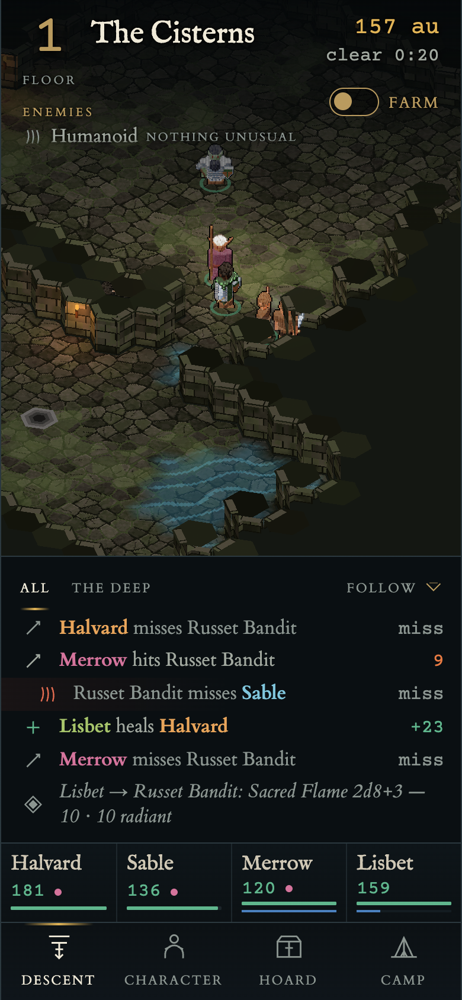
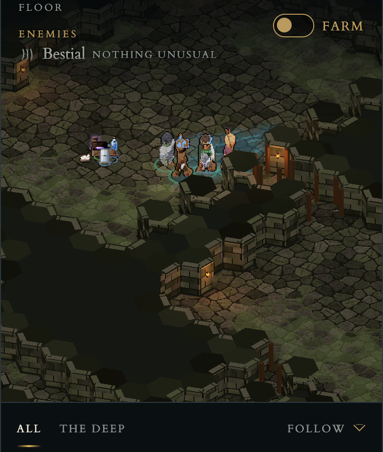
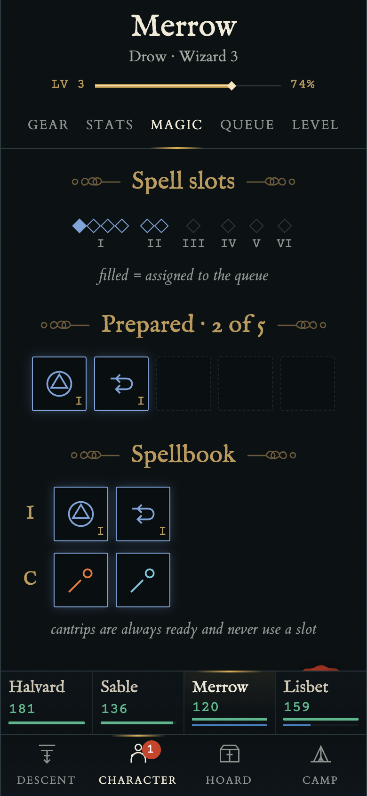
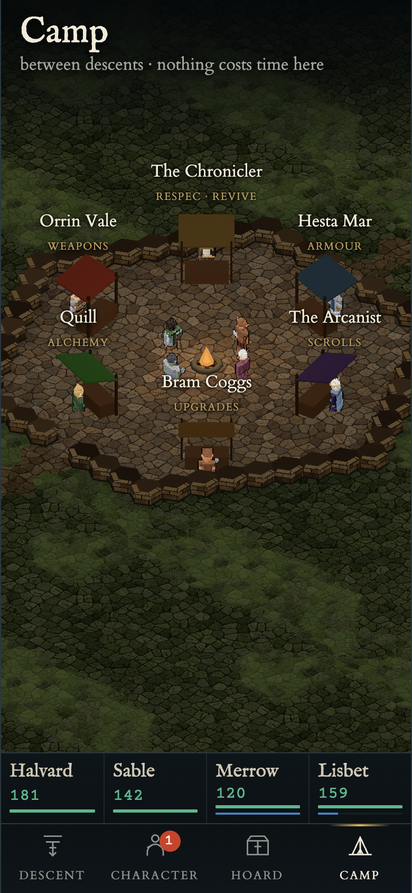

Nine phases for the six things the last pass left wrong or unfinished. The phases cover bodies that shove each other, one-wide corridors, ragged wall tops, bare rooms, a plain chest, the old spell and log icons, and a camp that is a ring of boxes. Every number on this page comes from tools/measure.mjs or the game's own gates. Anything not measured says so.
Engagement, then corridor shape, then wall geometry. Phases 4 and 5 stand things against walls, so the walls have to be final before anything is placed.
Room dressing and biome chests share one voxel prop pipeline (the D stacker already draws the figures) and one placement rule: against a wall, facing into the room.
O1 spell icons, O1 loot icons in the log, then the camp. The camp reuses phase 4's props for its stalls and hero plots. Phase 9 re-runs every gate and writes the records.
| # | Prompt item | Phase | Gate | Status |
|---|---|---|---|---|
| 1 | 2 · melee shoving | Engagement | shove < 0.005/s, worst tick < 0.05 · bodies ≥ 0.3 apart · census & simulate in band | done |
| 2 | 3 · corridors | Three-wide corridors | 100% of corridor cells in a 3-wide band · connectivity | done |
| 3 | 5 · wall tops | Watertight wall mass | 0 unfaced steps · 0 void edges · 8 biome shots | done |
| 4 | 3 · decorations · torches | Room dressing | every biome dressed · connectivity kept · shots | done |
| 5 | 3 · chests | Biome chests | 8 designs × open/shut · against a wall · shots | done |
| 6 | 1 · spell icons | O1 spell icons | every action renders · no SVG spell glyph left | done |
| 7 | 4 · log loot icons | O1 icons in the log | no item glyph path left · log shot | moved to part two |
| 8 | 6 · camp | The camp, rebuilt | shots · ui-checks · every stall still opens its shop | moved to part two |
| 9 | — | Verification & records | verify · census · ui-checks · handover · CLAUDE.md diff | moved to part two |
"1- the spell icons are still old ones. 2- some melee characters keep pushing the enemies around as they attack them and run into them. they should stay within melee range and keep it. dont continuouslly run intio the enemies. 3- the floors must have at least 3 hex width corridors, currently they are 1 width so everyone is crammed. the chest icons in the dungeons must be better, fit the theme, and fit to where they are placed in the floor, so they look nice. and each biome has unique chest design. also a bit bigger. floors can have more decorations like torches, prefereably changing colors and design according to biomes. bookshelves, beds, like destroyed beds and bookshelves and various decorations. sometimes destroyed, sometimes, rarely intact rooms. within floors. 4- the item icons in descend menu, as the items drop and show up in log, they are still old icons. 5- in descend, the floor wall top areas are not consistent and sometimes missing pieces, make it work perfectly correct. 6- in camp area, make it bigger, make npc stalls fit our new pixel design. and make each character have an area according to their character background and stuff, decorated with stuff. and us in the middle by the fire. make the fireplace area rich and fit our new textures."
Carried over from pass five and folded in: the one failing test (two bodies 0.24 apart), plus ui-checks, the screenshot run and the pass-five records, none of which were done.




Encounter.moveToward steers at the target's centre, and separate() then splits the overlap half and half. A hero closing in, or a third hero looking for room, therefore pushes the enemy it is fighting. Paths also run straight through other bodies.reach − 0.1 rather than at the centre.sim/combat/Encounter.ts · separation.ts · new engage.ts · dungeon/pathfind/corridors.ts digs one hex line through an elbow, and only one corridor in three gets a second cell. A corridor is where most fights end up, so four heroes and a pack meet in single file.placeDoors recognises a three-cell mouth where a corridor meets a room and marks its middle cell as the door. The posts go on the mouth's outer edges.paramsForDepth grows the grid by the corridor area it now needs, so rooms don't merge into one hall.generate/corridors.ts · rooms.ts · Floor.ts (connectivity is still asserted)wallMass(grid) gives every closed cell within 2 of the floor a height. A cell is cut to a stub when the floor lies behind it from the camera, decided once per cell by one rule, so the stub band is contiguous.render/tiles/wallMass.ts (pure) · HexMesher.ts · gen/textures/hexSurface.ts (capstone)data/dressing/ · sim/dungeon/generate/dress.ts · gen/sprites/props.ts · render/props/Dressing.tsEight chests, each drawn open and shut, at about 1.5× today's size:
No gold on any of them.
data/dressing/chests.ts · sim/dungeon/interact/place.ts · render/props/PropViews.ts
This is the proposal's spell grammar (docs/item-proposals/lib/parts.js · spellIconParts), ported.
The rendered sheet is shots/O1-spells.png in that folder. Each icon has:
Martial actions get a weapon-stamp variant instead of a sigil.
They replace SCHOOL_ICON and VFX_ICON in Magic, Learn, Queue, the queue editor, the slot picker and the scroll card.
SCHOOL_ICON or VFX_ICON use remains. Screenshots 15-magic, 16-queue and 17-queue-editor looked at.
The loot row in the descent log draws icon(loot.glyph ?? 'g-loot'), a manuscript SVG.
It will draw the dropped item's own O1 icon instead:
The icon is cached as a data URL. The same audit covers every other place an item still wears a glyph (item card, shop, hoard).
Six voxel stalls: posts, a cloth awning in the trade's colour, a counter, and wares for each trade:
The D traders stand behind their counters.
Each party member gets a plot on the outer ring, dressed by background (12 kits, data), for example:
The heroes stand round the fire in the middle. The fireplace is a stone ring with logs, a spit and pot, and log seats.
Ember motes and warm light are the only motion.
ui-checks passes. Every stall tap still opens its shop. Every one of the 12 kits is rendered once on a sheet.npm run verify (typecheck · lint · contrast · headless · test · audits · simulate), npm run census, ui-checks, the full screenshot set, and tools/measure.mjs again to fill the "after" column.
Then the records: 05-code-map.md, the directives (bugs, traps, decisions), a handover and its row, and a CLAUDE.md diff shown for approval. Performance on a phone is not measured unless a device run happens.
| Measure | Before | After | Target |
|---|---|---|---|
| Corridor cells in a three-wide band (24 floors) | 24.1% (worst 0.05) | 100.0% | 100% |
| Shove per engaged second | 0.0461 | 0.0043 | < 0.005 |
| Worst single-tick shove | 0.336 | 0.034 | < 0.05 |
| Unfaced wall-top height steps (8 floors) | 403 | 0 | 0 |
| Wall-top edges into void (8 floors) | 2584 | 0 | 0 |
| Tests | 36 pass · 1 fail | 47 pass · 0 fail | all pass |
| simulate median depth | 14 | 20 (spike at 21–22: see handover) | ±10% |